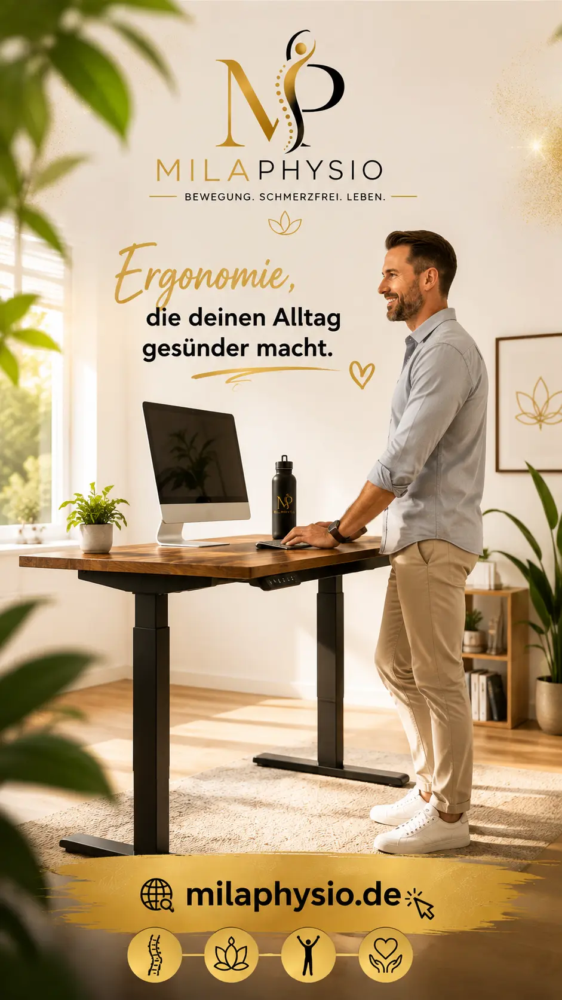

Devoko Höhenverstellbarer Schreibtisch
Elektrisch höhenverstellbarer Schreibtisch mit zwei Motoren für einen flexibleren Arbeitsplatz.
Bei Amazon kaufenWarum finde ich einen höhenverstellbaren Schreibtisch interessant?
Bei der Arbeit am Schreibtisch verbringen viele Menschen mehrere Stunden am Tag in einer ähnlichen Körperposition. Gerade bei langen Arbeitszeiten kann es sinnvoll sein, die eigene Position regelmäßig zu verändern.
Genau hier finde ich einen höhenverstellbaren Schreibtisch interessant: Er ermöglicht einen einfachen Wechsel zwischen Sitzen und Stehen.
Aus physiotherapeutischer Sicht geht es dabei nicht darum, möglichst lange zu stehen. Viel wichtiger ist es, nicht stundenlang in derselben Position zu bleiben.
Ein höhenverstellbarer Schreibtisch kann deshalb eine praktische Möglichkeit sein, mehr Positionswechsel und Bewegung in den Arbeitsalltag einzubauen.
Mögliche Vorteile
Höhenverstellbar
Die Arbeitshöhe kann an unterschiedliche Körpergrößen und Arbeitssituationen angepasst werden.
Sitzen & Stehen
Der Arbeitsplatz kann flexibel zwischen sitzender und stehender Tätigkeit angepasst werden.
Mehr Positionswechsel
Ein höhenverstellbarer Tisch kann dazu beitragen, häufiger die Körperposition zu verändern.
Homeoffice
Besonders interessant für Menschen, die regelmäßig zu Hause am Schreibtisch arbeiten.
Flexibler Arbeitsplatz
Die Höhe lässt sich an verschiedene Tätigkeiten und Arbeitspositionen anpassen.
Bewegung im Alltag
Der Tisch kann helfen, Bewegung und Positionswechsel bewusster in den Arbeitsalltag einzubauen.
Mein Tipp für einen ergonomischeren Arbeitsplatz
Die beste Schreibtischhöhe ist individuell. Entscheidend ist, dass die Arbeitsposition möglichst entspannt bleibt.
Beim Sitzen
- Schultern möglichst entspannt
- Unterarme bequem auf der Arbeitsfläche
- Ellenbogen ungefähr im rechten Winkel
- Füße stabil auf dem Boden
- Bildschirm passend zur Körpergröße
Beim Stehen
- Gewicht auf beide Beine verteilen
- Schultern locker halten
- Nicht dauerhaft in einer Position stehen
- Regelmäßig die Position verändern
- Kurze Bewegungspausen einbauen
Für wen kann ein höhenverstellbarer Schreibtisch interessant sein?
Besonders interessant kann ein solcher Arbeitsplatz für Menschen sein, die viele Stunden am Computer arbeiten.
Dazu gehören beispielsweise Menschen im Homeoffice, Büroangestellte, Selbstständige, Studierende und Personen, die regelmäßig digitale Aufgaben erledigen.
Auch wenn bereits gelegentliche Beschwerden nach langem Sitzen auftreten, kann eine abwechslungsreichere Arbeitsplatzgestaltung sinnvoll sein.
Wichtig: Ein höhenverstellbarer Schreibtisch ist kein medizinisches Hilfsmittel und ersetzt keine individuelle physiotherapeutische oder ärztliche Beratung.
Mein Fazit
Ich finde einen höhenverstellbaren Schreibtisch vor allem deshalb interessant, weil er mehr Flexibilität in den Arbeitsalltag bringen kann.
Für mich ist dabei nicht entscheidend, möglichst lange zu stehen. Viel wichtiger ist die Möglichkeit, die Arbeitsposition regelmäßig zu verändern.
Zusammen mit einem gut eingestellten Bürostuhl, einem passenden Bildschirm und regelmäßigen Bewegungspausen kann ein höhenverstellbarer Schreibtisch eine sinnvolle Ergänzung für einen ergonomisch gestalteten Arbeitsplatz sein.
Hinweis: Diese Seite enthält Affiliate-Links. Wenn Sie über einen solchen Link einkaufen, kann ich eine Provision erhalten. Für Sie entstehen dadurch keine zusätzlichen Kosten.
Meine Empfehlungen basieren auf meiner persönlichen Einschätzung und ersetzen keine individuelle medizinische Beratung.